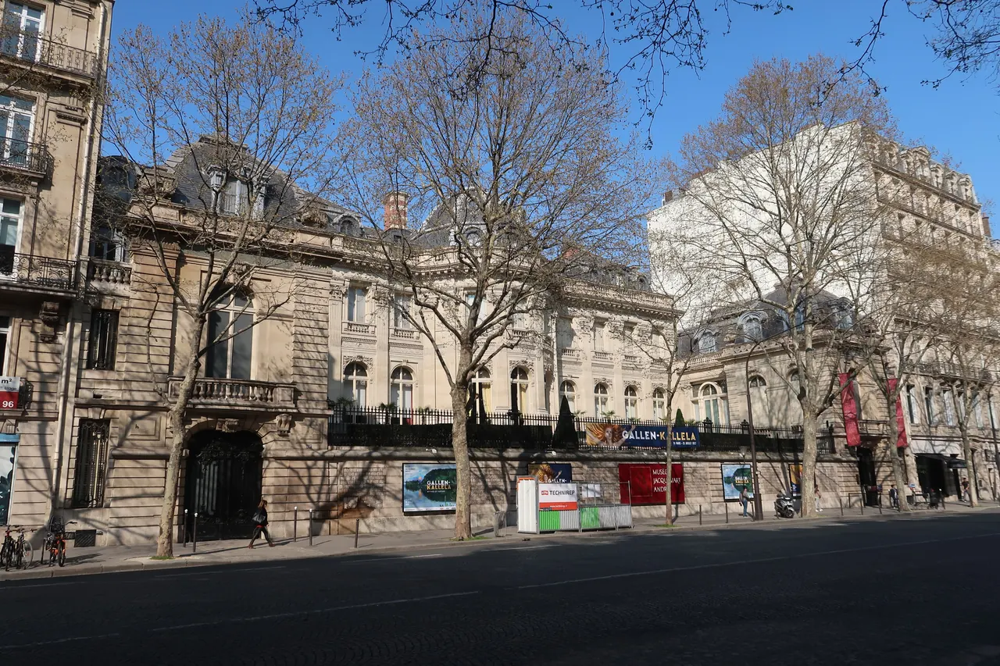

{kind=link}
관광·미술관
Nous avons déjà des billets.
이미 표가 있습니다.
누 자봉 데자 데 비예

파리 8구 부르주아 지구인 오스만 대로(Boulevard Haussmann)에 위치한 자크마르-앙드레 미술관은 은행가이자 예술 애호가였던 에두아르 앙드레(Édouard André)와 당대 최고의 여성 초상화가였던 넬리 자크마르(Nélie Jacquemart) 부부가 평생에 걸쳐 수집한 보물들을 자신들의 호화 저택과 함께 국가에 기증하여 탄생한 공간이다.
19세기 말 파리 상류사회의 최정점이었던 대저택의 응접실, 음악실, 겨울 정원(Jardin d'hiver)이 완벽하게 보존되어 있으며, 부부가 매년 이탈리아를 여행하며 직접 사들인 이탈리아 르네상스 걸작들과 조반니 바티스타 티에폴로의 천장 프레스코화는 루브르 박물관에 필적하는 예술적 깊이를 선사한다.
"거대한 국립 박물관의 혼잡함에서 벗어나, 19세기 파리 귀족의 저택에 초대받은 손님이 된 듯한 은밀하고 호화로운 예술적 사색을 누릴 수 있는 곳이다." 리노베이션을 거쳐 재개관하여 컨디션이 매우 우수하며, 인근 몽소 공원(Parc Monceau)과 이어지는 오후 힐링 코스로 완벽하다.
| 항목 | 상세 정보 |
|---|---|
| 위치 | 158 Boulevard Haussmann, 75008 Paris |
| 운영 시간 | 매일 10:00–18:00 (금요일 야간 22:00까지 연장) / 연중무휴 |
| 입장료 | 일반 성인 €15.00–€18.00 (기획전에 따라 변동, 오디오가이드 포함) |
| 사전 온라인 예매 (권장) | 공식 웹사이트(musee-jacquemart-andre.com)에서 입장 시간 슬롯 사전 예매 권장 |
| 교통 접근 | 메트로 9/13호선 Miromesnil역 도보 5분, 메트로 9호선 Saint-Philippe-du-Roule역 도보 5분 |
| 연계 도보 | Parc Monceau (몽소 공원) 북쪽 도보 6분 거리 |
Nous avons déjà des billets.
이미 표가 있습니다.
누 자봉 데자 데 비예
On peut prendre des photos ?
사진 찍어도 되나요?
옹 푀 프랑드르 데 포토
Où commence la visite ?
관람은 어디서 시작하나요?
우 코망스 라 비지트

1868년 앙리 라브루스트가 주철 기둥과 9개 도자기 돔으로 완성한 19세기 건축의 걸작 '라브루스트 열람실'과 일반에 전면 무료 개방된 거대한 타원형 '오발 열람실(Salle Ovale)', 프랑스 국립도서관 박물관.

18세기 원형 곡물거래소를 세계적인 건축가 안도 다다오가 노출 콘크리트 원통 실린더로 리노베이션한 현대미술관. 프랑수아 피노 회장의 세계적 현대미술 컬렉션과 1889년 돔 천장 무역 파노라마 프레스코화.

렌조 피아노와 리처드 로저스가 건물 배관과 골격을 외벽으로 노출시킨 20세기 하이테크 건축의 전설이자 유럽 최대 근현대미술관. ⚠ 2025년 가을부터 2030년까지 전면 개보수 공사로 본관 폐관 중.

클로드 모네가 43년간 직접 꽃과 연못을 가꾸며 불후의 『수련』 대작을 창조해낸 살아있는 인상파 캔버스. 초록색 일본식 다리가 걸린 '물의 정원(Jardin d'eau)'과 핑크빛 모네 생가 아틀리에.

1900년 파리 만국박람회를 위해 건립된 45m 높이 아르누보 철골 유리 네이브(Nave)의 기념비적 국립 전시장. 2024 파리 올림픽을 거쳐 리노베이션 완료 후 재개관한 파리 문화 예술의 중심지.

중세 소르본 대학 교수와 학생들이 공용어로 라틴어를 쓰던 데서 유래한 800년 파리 지성의 요람이자 센 강 좌안(Rive Gauche)의 심장. 프랑스 위인들의 성소 팡테옹(Panthéon), 셰익스피어 앤 컴퍼니, 뤽상부르 공원.